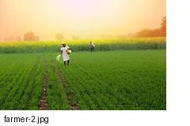
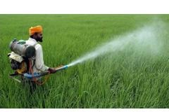
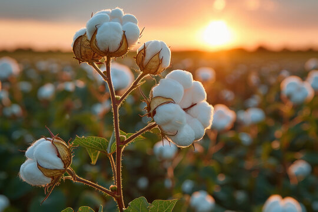
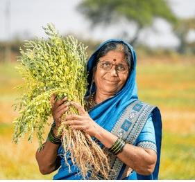

🧪 AI Soil Analysis
Image-based soil assessment and clear soil health information.
Each feature has a clear purpose and a matching visual reference.

Image-based soil assessment and clear soil health information.

Upload JPEG/PNG or use the phone camera directly.

Get crop suggestions from soil conditions.

Record N, P, K, pH, organic matter and moisture.
Keep weather and irrigation decisions visible.

Review earlier soil and crop records.

Turn soil information into practical next steps.

Simple screens with visual guidance.